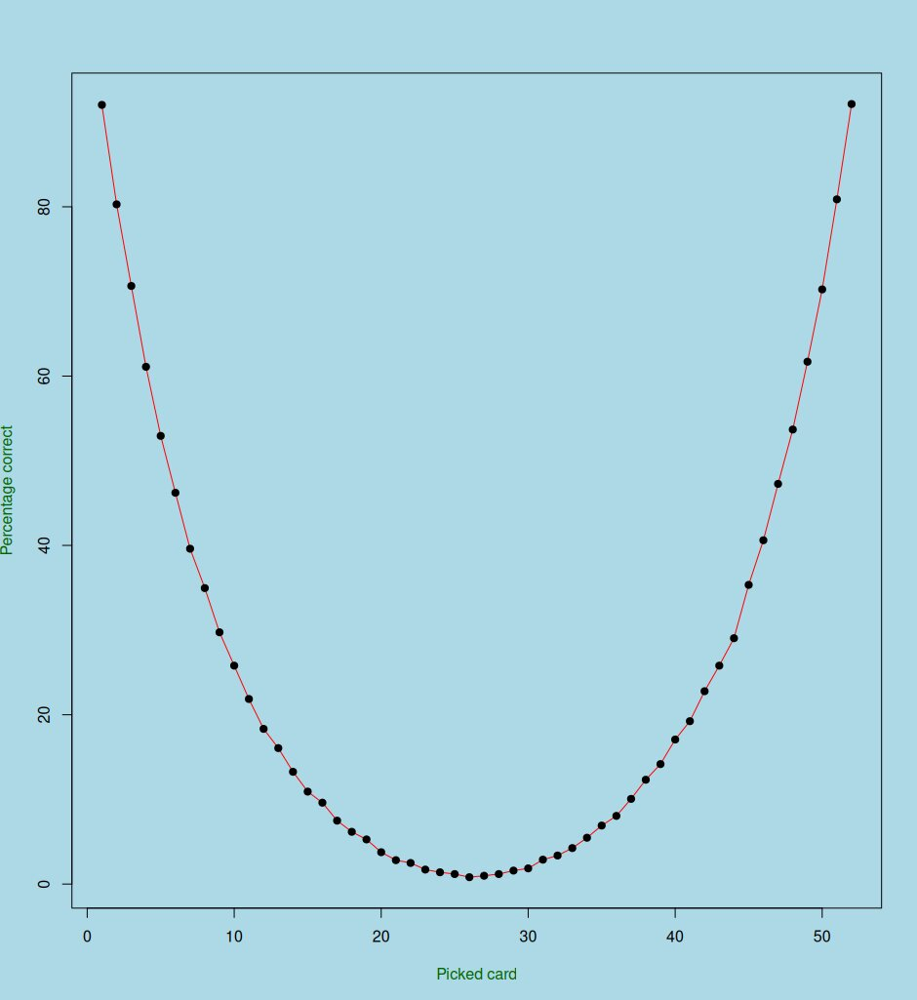

This was my statistics project at ISI Sem 1. My team had: Myself, Siddhartha, Ayan, Drishti, Aman, Mrittika. Thanks to everyone for their efforts.
Setup
The magician sends you a deck of cards. You riffle shuffle it three times. You pick the card from the top and put it back in the deck, somewhere. You send the deck back to the magician. Can he find the chosen card?
What do you think? Well, I guess I wouldn’t have asked this question if this weren’t possible. Yep - it is possible to do it reliably well.
I couldn’t believe it myself. However, I think it will make more sense when I present the algorithm which was (apparently) discovered by Shannon. We will talk about this in part A. And implement it in part B. In the subsequent parts, we investigate what happens if we play with the setup a little bit.
Part A: Shannon’s Algorithm
Remember the original orientation of the deck of cards. Label the cards in this orientation \[
\{1,2,\cdots,52\}
\]
Now, we define rising sequence decomposition. To decompose a deck into its rising sequences we go through the following algorithm
Algorithm:
Start with 1.
Find the next number, If it is after the previous number, goto step 2. Else, continue.
This is a rising sequence. Start with the next unconsidered number, and goto step 2.
For example, if the deck is \(\{4,3,5,1,2\}\). we go \(1\to 2 \implies (1,2)\), \(3 \implies (3)\), \(4 \to 5 \implies (4,5)\), thus \(\{4,3,5,1,2\} \implies (1,2)(3)(4,5)\).
Well, it’s time to reveal the secret algorithm that Shannon came up with:
Algorithm:
Perform the rising sequence decomposition of the final deck. There exists a unique rising sequence singleton in this deck - this is the picked card.
Our team implemented the algorithm in R and the results were extremely satisfactory.
Part B: Implementation
Version 1: Distribution fitting
We first cut a standard deck 100 times (LOL IN REAL LIFE) and we recorded the number of cards in the smaller deck (Let this vector be \(X\)). I was going to fit the Gaussian distribution over the vector \(c(X,52-X)\).
However, I noticed my skill issue when @Ayan pointed out that this dataset would not be IID. To fix this issue, I tossed a coin 100 times and picked either \(x \text{ or } 52-x\) for every \(x \in X\). Fitting the Gaussian distribution over this we ended up with
floor(rnorm(1, mean=25.78, sd =2.3046))
Everything else was fairly easy to implement, I had quite some fun while making this. This empirically confirms that the algorithm works with pretty high probabilities \(\left(\sim 91\%\right)\).
Well, I know the code is probably not human-readable (moreso because it was written by me, lol), so, I work with the following functions: RiffleShuffle, Switch, RisingSingleton, Process, and SumCalculator. Here’s what’s special about each of them:
RiffleShuffle(Deck): This first splits the deck according to the fitted distribution. Then, it stores a counter of the number of cards in the Left and Right hands (LeftHand, RightHand). My assumption is: the probability that the “next” card is from the Left hand is \(\frac{\texttt{LeftHand}}{\texttt{LeftHand + RightHand}}\) and similarly for the Right hand.
Switch(Deck, c(x, y)): The \(x^{\text{th}}\) index card is moved to the \(y^{\text{th}}\) index in the deck.
RisingSingleton(Deck): Well, this is interesting. I first create the index array which stores the location of the \(i^{\text{th}}\) card in the Deck. Then - note that if there is a RisingSingleton: there is an element \(x\) such that \(\texttt{index}[x+1] < \texttt{index}[x]\) and \(\texttt{index}[x-1] > \texttt{index}[x]\). The weird condition in the code is to deal with the edgecases, so don’t worry about that. At last, it counts the total number of rising singletons and returns the pair \((\texttt{(Sum(RisingSingleton) == 1)}, \texttt{LastSingleton})\).
Process: This simulates the whole setup, and returns the boolean \((\texttt{(Sum(RisingSingleton) == 1) AND (LastSingleton == CorrectCard)})\) which amounts to checking whether we get what we want.
SumCalculator: This function carries out Process 10000 times and finds the percentage of times it gets the card right.
#Cards is the permutation _Sigma_.Dataset =c(26,26,24,26,26,25,26,26,25,23,25,26,24,26,24,26,26,23,20,26,23,22,25,23,26,26,23,25,23,25,25,25,25,26,25,23,25,24,26,25,26,23,26,23,26,24,26,24,25,24,25,23,24,25,22,21,25,25,25,21,23,24,23,21,26,25,25,24,24,25,24,25,24,24,23,25,21,25,26,26,23,25,25,23,21,24,21,25,25,22,24,25,26,23,24,25,19,25,23,25)RiffleShuffle <-function(Cards){### Riffle shuffles the vector of Cards using### L/(L+R), R/(L+R) probabilities to each hand. NewDeck =vector() split =floor(rnorm(1, mean=25.78, sd =2.3046)) LeftHand = Cards[1:split] RightHand = Cards[(split+1):52]for(x in1:52){ L <-length(LeftHand) R <-length(RightHand) hand =sample(c("L", "R"), 1, prob=c(L,R))if(hand =="L"){ card = LeftHand[1] LeftHand <-if (L !=1) LeftHand[2:L] elsevector() NewDeck =append(NewDeck, card) }else{ card = RightHand[1] RightHand <-if (R !=1) RightHand[2:R] elsevector() NewDeck =append(NewDeck, card) } }return(NewDeck)}Switch <-function(Cards, vals) {# 1 <= y <= 52# 1 <= x <= 52# Logic: xth index card is moved at yth index x = vals[1] y = vals[2] NewCards =vector()for (i in1:length(Cards)) {if (i != x) { NewCards =append(NewCards, Cards[i]) } }if (y !=1) {if (y !=52) { NewCards =append(NewCards, Cards[x], after = y -1) } else { NewCards =append(NewCards, Cards[x]) } } else { NewCards =append(Cards[x], NewCards) }return(NewCards)}RisingSingleton <-function(array){### Checks if there is a unique Rising Singleton and returns the singleton. index =numeric(0)for (i in1:52){ index[array[i]] = i } Sum =0 SingletonCard =0for (i in1:52){if((index[i] >= index[min((i+1), 52)]) & (index[i] <= index[max((i-1), 1)])){ Sum = Sum +1 SingletonCard = i } }return(c((Sum ==1), SingletonCard))}Process <-function(Cards){### Performs the whole process and outputs whether there### is a unique Rising Singleton Cards =RiffleShuffle(Cards) Cards =RiffleShuffle(Cards) Cards =RiffleShuffle(Cards) vals =c(1, rbinom(1, 52, 0.5)) PickedCard = Cards[1] Cards =Switch(Cards, vals) RSCheck =RisingSingleton(Cards)return((RSCheck[1])&(RSCheck[2] == PickedCard))}SumCalculator <-function(Cards){### Simulates Process 10000 and counts how many times ### there is a unique Rising Singleton which is also indeed### the picked card. Sum =0for(i in1:10000){ Sum = Sum +Process(Cards) }return(Sum)}Cards =1:52SumCalculator(Cards)/10000*100
[1] 91.91
Also, @Siddhartha implemented this in Python
import numpy as npimport randomdef riffle_shuffle(deck): cut_index =int(np.random.normal(25.78, 2.3046)) cut_index =max(1, min(cut_index, 51)) left_hand = deck[:cut_index] right_hand = deck[cut_index:] shuffled_deck = []while left_hand or right_hand:iflen(right_hand) >0and np.random.rand() <=len(right_hand) / (len(left_hand) +len(right_hand)): shuffled_deck.append(right_hand.pop(0))else: shuffled_deck.append(left_hand.pop(0))return shuffled_deckdef swap_first_card(deck): index =int(list(np.random.binomial(52, 0.5, 1))[0]) index =min(index, 52) deck[0]=deck.pop(0) deck.insert(index,deck[0])def rising_singleton(array):# Create an index array to store the positions of values in the input array index = [0] *52# Populate the index array with the positions of values in the input arrayfor i inrange(52): index[array[i] -1] = i Sum =0 SingletonCard =0# Check if there is a unique Rising Singletonfor i inrange(52):if (index[i] >= index[min(i +1, 51)]) and (index[i] <= index[max(i -1, 0)]): Sum +=1 SingletonCard = i +1return [Sum ==1, SingletonCard]unique_singleton_count =0# Repeat the process 10,000 timesfor x inrange(10000): deck =list(range(1,53))for y inrange(3): deck = riffle_shuffle(deck) swap_first_card(deck) is_unique_singleton,z = rising_singleton(deck)if is_unique_singleton: unique_singleton_count +=1# Percentage of unique singletonsprint("Percentage: ", unique_singleton_count/100)
Percentage: 92.38
Version 2: Splitting using \(\operatorname{Bin}\left(52, \frac{1}{2}\right)\)
#Cards is the permutation _Sigma_.RiffleShuffle <-function(Cards){ ... split =rbinom(1, 52, 1/2) ...}
Where I only change how I perform the split. This results in about \(\left(89\%\right)\).
Part C: Playing Around
We can now tinker with the setup to see what happens when we change things a little bit. Note that we picked the card from the top and put it back somewhere. It makes sense to ask: what happens when we pick it from anywhere? Well, here’s a plot in R which showcases what happens when we vary the location of the picked card.

Which makes sense because the way we are choosing the position to put the card into is a function symmetric around 26.